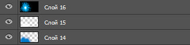
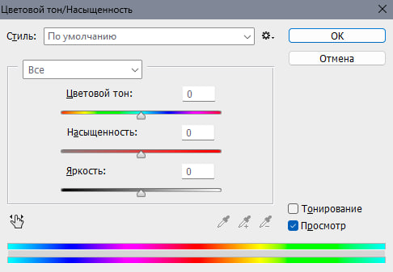
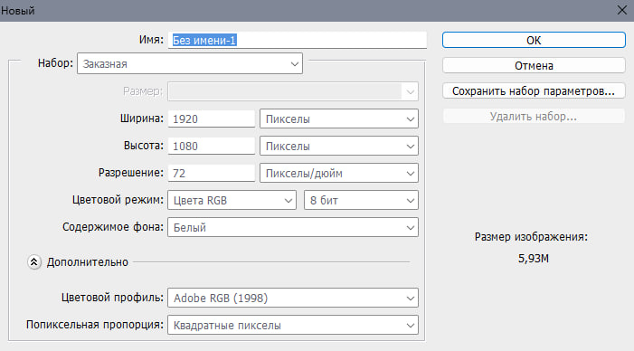
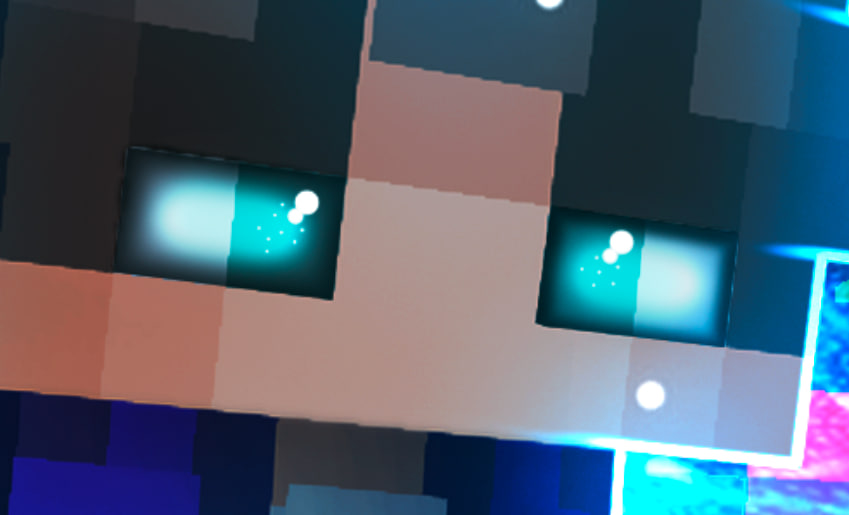

Портфолио превью.
Всем привет, меня зовут Марк, и я очень люблю делать превью для своих или для других видео.
Превью я учусь делать уже довольно долго, может быть с года 20.
Однако это мне не мешает привлекать людей к своим роликам и привлекать людей покупать у меня эти превью.
Мои превью выглядят так:


Что для этого понадобится?
Для нашей работы понадобится определённый пак, в котором будут эффекты использующиеся в моих превью.
Мой пак вы можете найти у меня на канале - arkin
Эффектов совсем не много, давайте их разберём.
Первые самые часто используемые у меня эффекты это эти три:
Они нужны для того, что бы сделать под персонажем красивое свечение. Цвет можно сделать абсолютно любой благодоря комбинации клавиш Ctrl + U

Если честно, это единственные эффекты, которые сложно будет повторить, поэтому только их нужно скопировать и вставить в наш проект. Поэтому я думаю, что можно переходить к следующему разделу.
Делаем превью
После того, как вы скачали мою сборку, мы можем приступать к работе.
Для начала мы должны создать проект.
Настройки у него должны быть
вот такими:

Затем мы добавляем абсолютно любой фон и растягиваем его до размера нашего проекта. После чего мы добавляем наш арт, который мы сделали. Если вы не сделали арт, то это можно сделать при помощи этого видео:
Обработка персонажа
Давайте начнём с глаз. Первым делом мы выделяем сами глаза и рисуем им тень.
После мы зарисовываем глаза белым цветом, и даём этому белому цвету параметр "Перекрытие"
После этого мы поверх белого цвета зарисовываем любым другим цветом которым хотим, и ставим ему параметр "Линейный осветлитель".
Белому цвету непрозрачность ставим на 50-70%, а другому цвету ставим на 60%
Что бы сделать блики можно просто поставить 2 точки у глаза вот таким способом:

И у нас выходит очень красивый глаз! Далее я бы хотел вам рассказать о лайнинге